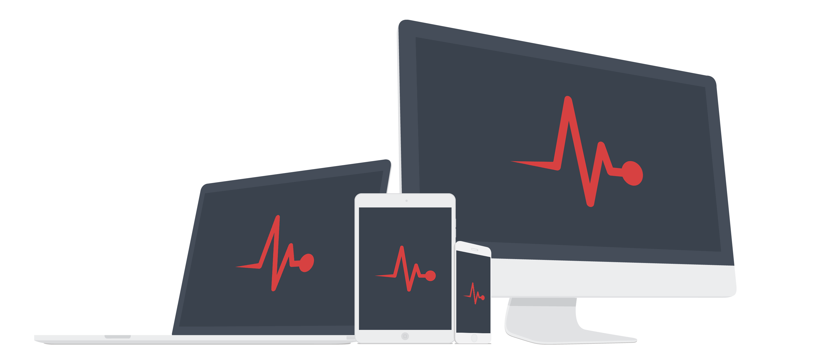

Vital
A minimally invasive CSS framework for modern web applications
Minimal
Vital is a reverse approach to "everything and the kitchen sink" CSS frameworks.
Simple


Readable
No ridiculous amounts of classes or nesting. No excessively buried code.

Scalable
Written almost entirely in emvalues, allowing for easy and consistent scaling.
Read the components documentation for more details. If you are new here, have a look at the getting started guide.

Light as a feather
At a total size of just 31 KB minified or 8 KB gzipped, Vital loads and renders quickly.
22KB
CSS framework
6 KB gzipped!
9KB
Font icons
2 KB per file!
0KB
No javascript
No problems!

Less is more
Traditional CSS frameworks include an overwhelming and unnecessary amount of bloat. Vital is built on the principal that less is more. Working with less code means there are fewer bugs to squash and less documentation to read. Less time spent coding means more time to focus on your next killer feature.

Regain productivity
Often times a large CSS framework is used to speed up the time to market or to enforce consistency, but when a project grows beyond the initial scope of a concept, development becomes more difficult and time consuming. Vital reduces workflow inefficiencies because there is less to learn and maintain.
Vast device support
Vital is a true cross-platform, mobile-first framework. Elements such as select boxes, checkboxes and radios render consistently across different platforms while gracefully degrading on legacy.
